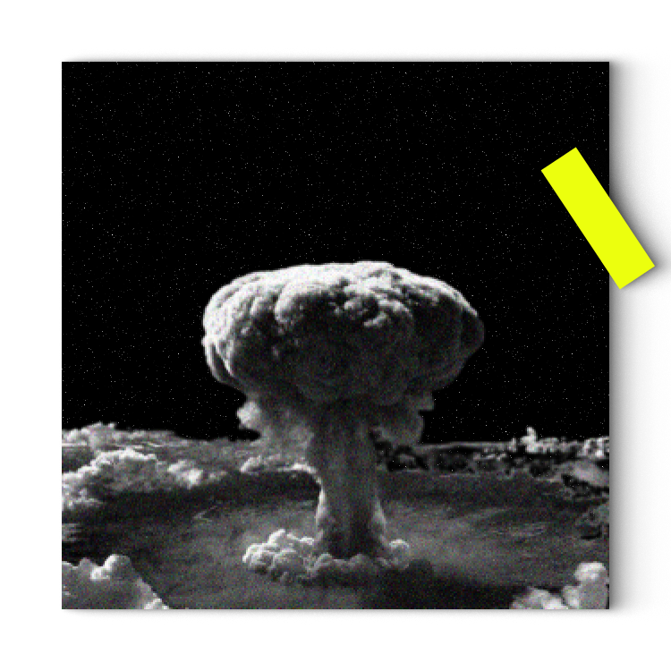

Ledakan hasil pengeboman yang terjadi di kota Hiroshima dan
Nagasaki
Ledakan bom atom di Hiroshima dan Nagasaki merupakan salah
satu tragedi besar dalam sejarah dunia. Pada tanggal 6 Agustus
1945, pesawat Amerika Serikat, Enola Gay menjatuhkan bom atom
di Hiroshima yang menyebabkan ledakan dahsyat yang
menghancurkan sebagian besar kota. Tiga hari kemudian, pada 9
Agustus, pesawat lainnya, Bockscar, menjatuhkan bom atom kedua
di Nagasaki yang juga menghancurkan sebagian besar kota.
Diperkirakan bahwa sekitar 200.000 orang tewas dalam ledakan
bom atom dan dampak radiasinya, baik saat ledakan itu terjadi
atau dalam beberapa tahun setelahnya.